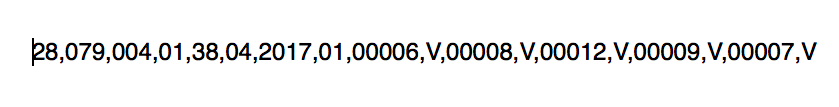
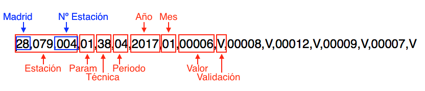

En la comunidad de Madrid cuando se superan determinados niveles de NO2 durante varias horas se activan una serie de protocolos para intentar evitar que los niveles de contaminación sigan aumentando. Estos protocolos se activan cuando se superan unos niveles demasiado altos.
Dependiendo del nivel de la alerta, estas medidas pueden ser más o menos restrictivas:
Esto provoca más atascos lo que implica más contaminación, y confusión e irritación en la gente.
Además aunque se delimitan 5 zonas distintas para hacer las mediciones y los niveles altos se detecten en distintas estaciones, las medidas restrictivas afectan principalmente a la almendra central de Madrid.
Asi que hemos decidido analizar los datos de este último año para ver si cuando se han activado las medidas, realmente han bajado los niveles de contaminación, es decir, si estas medidas son realmente útiles.
Otra de las cosas que creemos que podemos cambiar es el la distribución de las zonas de Madrid, ya que cuando se activan las medidas se colapsa todo el centro y probablemente no sea necesario.
En primer lugar hemos decidido analizar los datos del año 2017, ya que este último año es cuando se han activado más veces los protocolos anticontaminacion.
Los datos los proporciona la comunidad de Madrid mediante su portal de datos abiertos. Proporcionan tanto los datos por horas como los datos por dias, en este caso nos interesaban más los datos diarios para ver la evolución, este fichero lo actualizan mensualmente, a dia de hoy aun no han puesto los datos de Diciembre de 2017.
Presentan los datos en un fichero txt, el cual recoge la información de cada día del año, y para entender dichos datos facilitan un pdf que explica detalladamente como están distribuidos los datos. Los códigos de las estaciones en este fichero no están del todo actualizados, ni demasiado bien explicados, así que buscando la información de las estaciones nos encontramos con un excel en el que indica los codigos y la información referente a las estaciones, nos apoyamos en este fichero para identificar claramente las medias de cada estación.
En el fichero txt los datos vienen de la siguiente manera:
Qué significan:
